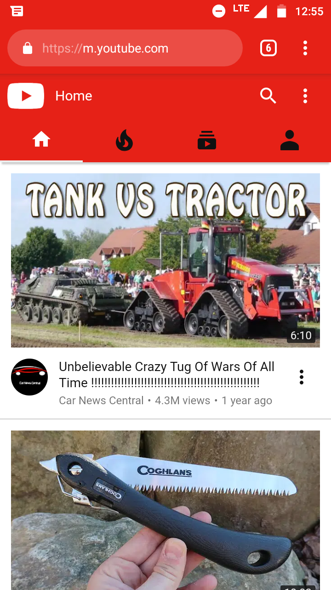
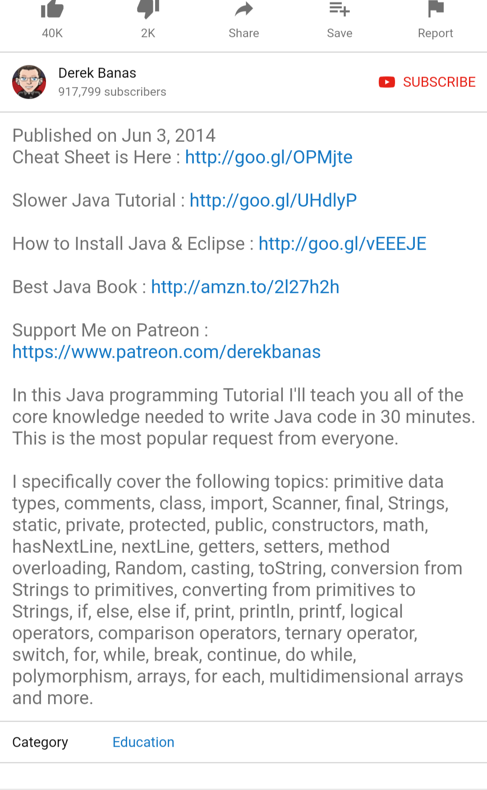

Design - Analysis Assessment
https://m.youtube.com
Design Principles
Proximity — Ryan

The website youtube.com does a great job of using proximity. In the photo you can see a set of search results that show how each video's picture and title is in close proximity to the Youtuber's name as well as the number of shares. They also used proximity (and some alignment, but that's neither here nor there) to make the individual menu button for each video stand out.
Alignment — Elijah
A good website must take notes of all the rules in website design. One of the important rule a website must have is, Alignment. Alignment is the characteristics that deal with placement, position, and orientation, and grouping of elements in a web document.Here, YouTube has an amazing alignment that supports mobile devices view and it’s easy for visitors or users to navigate their ways easily without getting fed up.
Repetition — Dakota
Here we see repetition through a picture of the video on the right. On the top, we see the title, who it was posted by below that. Then, the number of views along with how long ago it was uploaded. We also see a time on the bottom right corner of the video.
Contrast — Ryan
Youtube is well known for their simple red, black, and white color scheme. When talking about contrast (specifically WCAG AA compliance standards) the simple #FF0000 on a #FFFFFF background (red on white) doesn't necessarily do to well. Neither does #000000 on #FF0000. However it is important to note that as far as contrast goes, Youtube makes sure to use the right font sizes so that the words to contrast well enough to read. In the snapshot I took you can clearly depict the home icon as well as the search and menu bars on their mobile web page, and there is good contrast between their white background and their videos that are listed on the page.
Typography — Harmony
YouTube is a very interesting website to look at the typography. All of YouTube is a single font known as YouTube Sans (based on Roboto). The creators of YouTube wanted something unique while keeping it very simple. As I show in the screenshots every single line of text is this very simple type, but the type isn't pland it still has character. This allows it to be recognized as YouTube Sans as it's the only website to solely use that typeface.
Site Purpose Statement
The purpose of YouTube is to enable people from around the world to share videos with each other. Allowing people to learn about people from all walks of life, and to connect people who would never meet otherwise. It is built around finding things that interest you and have easy access to videos about those things.
Target Audience
- Age: 12-60
- Occupation: Learning new things
- Income: $10-$20,000
- Other: Students and Teachers wanting to learn new skills in their particular fields.
Persona
- Name: Blaine Robertson

- Occupation: Teacher
- Primary Device: Computer
- Quote: You know it when you see it.